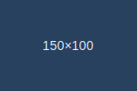

5. Практика з float та clear
Обтікання зображенням (float)
Цей абзац обтікає зображення зліва. Додайте більше тексту, щоб побачити обтікання в дії. Float історично використовувався для створення колонок, але нині частіше застосовується для обтікання медіа або невеликих елементів.
Ще один абзац для демонстрації. Після блоку з float інколи потрібно «скинути обтікання», щоб подальші елементи не «підстрибували» навколо плаваючих елементів.
Цей текст знаходиться після очищення обтікання (clear: both) і починається під плаваючим елементом.
Дві колонки з float + footer з clear
Ліва колонка
Контент ліворуч...
Права колонка
Контент праворуч...
Footer цього блоку не «залазить» під колонки завдяки clear: both.